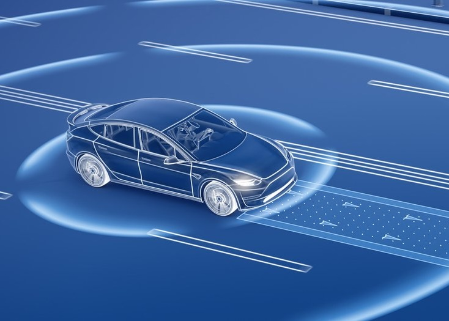

Enhancing Melanoma Detection
A comparative study of machine learning techniques, including transfer learning, CNNs, SVMs, and logistic regression, using the Melanoma Skin Cancer Dataset.

Autonomous Taxi System within a Simulated City Environment
An Autonomous Vehicle Taxi system combining localization, routing, motion planning, and perception algorithms to navigate a simuated city.
Grants Self Service System
Grants-Self-Service System uses LLMs and RAG techniques to streamline Vanderbilt University's grant applications, providing quick access to prior grant data securely.